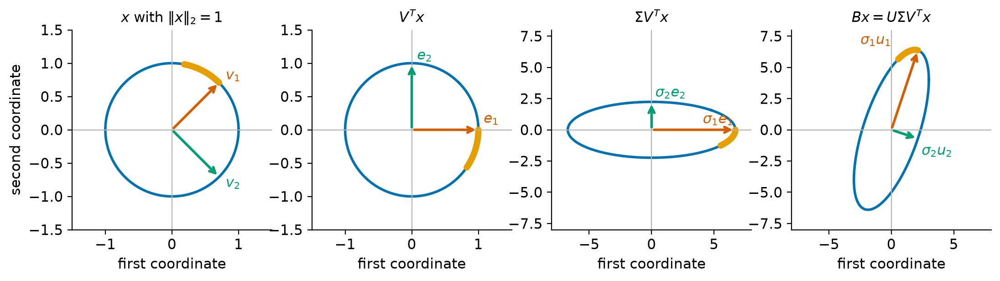
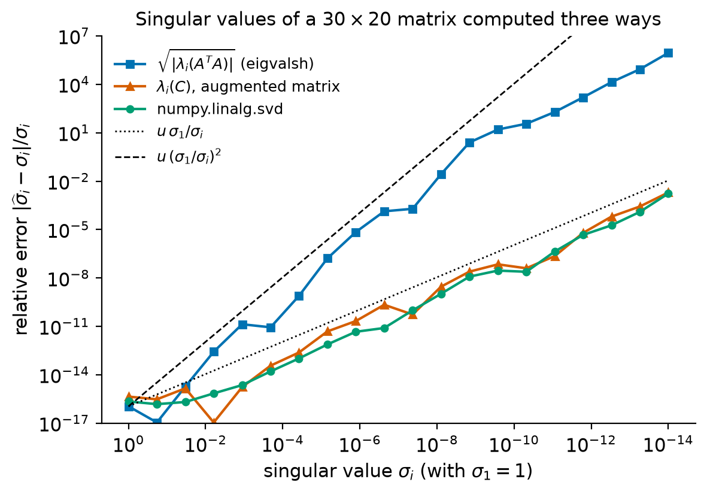
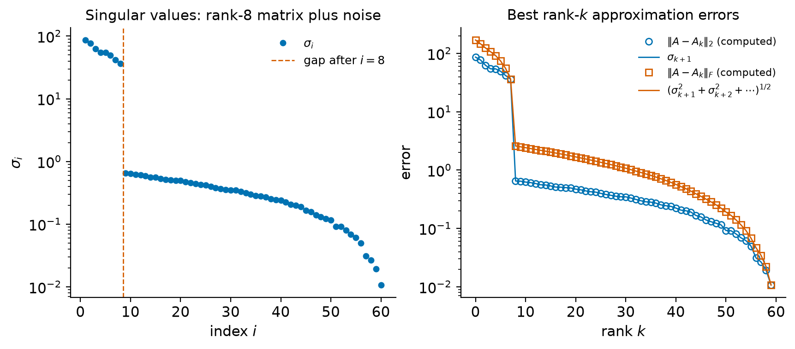

2. The singular value decomposition#
Every matrix, square or rectangular, symmetric or not, becomes diagonal when we are allowed to choose one orthonormal basis for its domain and another for its range. This is the content of the singular value decomposition (SVD), \(A = U\Sigma V^T\). Geometrically it says that every linear map sends the unit sphere to an ellipsoid, and the lengths of the semi-axes of that ellipsoid, the singular values, measure how strongly the map stretches in each direction. We met the first of them in Figure 1.2, where the 2-norm appeared as the longest semi-axis.
The SVD answers many questions about a matrix at once. It reveals the rank of a matrix and orthonormal bases for its four fundamental subspaces; it gives the 2-norm, the Frobenius norm and the 2-norm condition number; it produces the best approximation of a matrix by one of lower rank; and it defines the pseudoinverse and the minimum-norm solution of a least-squares problem. Just as important for a numerical course, singular values are well conditioned: a perturbation of size \(\epsilon\) in the matrix moves no singular value by more than \(\epsilon\). This makes the SVD the reliable tool for deciding questions such as “what is the rank of this matrix?” in floating-point arithmetic, where exact answers are not available.
This chapter develops the theory with complete proofs, emphasizing the facts
that later chapters depend on. Algorithms for computing the SVD are the
subject of Chapter 10; here we treat numpy.linalg.svd as a
backward stable black box and learn what can and cannot be concluded from its
output.
Learning objectives
After working through this chapter you should be able to:
prove that every real matrix has an SVD, describe in what sense it is unique, and interpret it geometrically as a map from the unit sphere to an ellipsoid;
move between the full, thin and compact forms of the SVD and read off the rank, the four fundamental subspaces, \(\|A\|_2\), \(\|A\|_F\) and \(\kappa_2(A)\);
relate singular values to the eigenvalues of \(A^TA\), \(AA^T\) and the augmented matrix \(\begin{bmatrix}0&A^T\\A&0\end{bmatrix}\), and explain why singular values should not be computed from the eigenvalues of \(A^TA\);
state and prove the Eckart–Young–Mirsky theorem in the 2-norm and the Frobenius norm, Weyl’s inequality for singular values, and the perturbation bound \(|\sigma_i(A+E) - \sigma_i(A)|\le\|E\|_2\);
define the numerical rank with a tolerance and choose the tolerance sensibly;
define the Moore–Penrose pseudoinverse and use it to write down the minimum-norm least-squares solution;
verify all of these statements numerically, and compute low-rank approximations with honest error measurements.
2.1. Existence, uniqueness, and geometry#
2.1.1. The idea#
Let \(A\in\R^{m\times n}\). In Theorem 1.4 we found that \(\|A\|_2^2\) is the largest eigenvalue of \(A^TA\) and that the unit vector \(v_1\) which \(A\) stretches most is a corresponding eigenvector. Having found this most-stretched direction, it is natural to look for the most-stretched direction orthogonal to it, and so on. The SVD records the outcome: orthonormal input directions \(v_1,v_2,\dots\), orthonormal output directions \(u_1,u_2,\dots\), and stretch factors \(\sigma_1\ge\sigma_2\ge\dots\) with \(Av_i = \sigma_iu_i\).
Throughout the chapter \(p = \min(m,n)\).
Definition 2.1 (Singular value decomposition)
A singular value decomposition of \(A\in\R^{m\times n}\) is a factorization
where \(U\in\R^{m\times m}\) and \(V\in\R^{n\times n}\) are orthogonal and \(\Sigma\in\R^{m\times n}\) is diagonal, \(\Sigma = \diag(\sigma_1,\dots,\sigma_p)\) (padded with zero rows or columns), with \(\sigma_1\ge\sigma_2\ge\dots\ge\sigma_p\ge0\). The numbers \(\sigma_i\) are the singular values of \(A\), the columns \(u_i\) of \(U\) are left singular vectors, and the columns \(v_i\) of \(V\) are right singular vectors. It is convenient to set \(\sigma_k = 0\) for \(k>p\).
Multiplying (2.1) on the right by \(V\) and on the left by \(U^T\) shows that, column by column,
while \(Av_i = 0\) for \(p<i\le n\) and \(A^Tu_i = 0\) for \(p<i\le m\).
2.1.2. Existence#
Theorem 2.1 (Existence of the SVD)
Every \(A\in\R^{m\times n}\) has a singular value decomposition, and \(\sigma_1 = \|A\|_2\).
Proof. We use induction on \(p = \min(m,n)\). Let \(\sigma_1 = \|A\|_2\). Since the unit sphere is compact and \(x\mapsto\|Ax\|_2\) is continuous, there is a unit vector \(v_1\in\R^n\) with \(\|Av_1\|_2 = \sigma_1\). If \(\sigma_1>0\) put \(u_1 = Av_1/\sigma_1\); if \(\sigma_1 = 0\) let \(u_1\in\R^m\) be any unit vector. In both cases \(Av_1 = \sigma_1u_1\) and \(\|u_1\|_2 = 1\).
Extend \(v_1\) to an orthogonal matrix \(V_1 = [v_1,\ \widehat V]\in\R^{n\times n}\) and \(u_1\) to an orthogonal matrix \(U_1 = [u_1,\ \widehat U]\in\R^{m\times m}\) (for instance by Gram–Schmidt applied to \(v_1, e_1,\dots,e_n\), or with a Householder reflector that maps \(e_1\) to \(\pm v_1\)). Because \(u_1^TAv_1 = \sigma_1\) and \(\widehat U^TAv_1 = \sigma_1\widehat U^Tu_1 = 0\),
We claim \(w = 0\). By unitary invariance (Theorem 1.6) \(\|S\|_2 = \|A\|_2 = \sigma_1\). The first entry of \(S\begin{bmatrix}\sigma_1\\ w\end{bmatrix}\) is \(\sigma_1^2 + w^Tw\), so
If \(w\neq0\) this shows \(\|S\|_2\ge(\sigma_1^2+w^Tw)^{1/2}>\sigma_1\), a contradiction. Hence \(A = U_1\begin{bmatrix}\sigma_1&0\\0&B\end{bmatrix}V_1^T\).
If \(p = 1\), the block \(B\) has no rows or no columns, and since \(w = 0\) the matrix \(S\) already has the form of \(\Sigma\); we are done. Otherwise \(\min(m-1,n-1) = p-1\), and by the induction hypothesis \(B = U_2\Sigma_2V_2^T\) with singular values \(\sigma_2\ge\dots\ge\sigma_p\ge0\), where \(\sigma_2 = \|B\|_2\). Then
and \(U\) and \(V\) are products of orthogonal matrices. It remains to check the ordering: for any unit \(x\in\R^{n-1}\), \(\|Bx\|_2\le\|S\,[0;\,x]\|_2\le\sigma_1\), so \(\sigma_2 = \|B\|_2\le\sigma_1\).
The proof follows Trefethen and Bau [1997] (Lecture 4). It constructs the singular triplets greedily, which is exactly the “most-stretched direction” idea above. A second proof, from the eigendecomposition of \(A^TA\), is outlined in Remark 2.1. For complex matrices the same argument gives \(A = U\Sigma V^*\) with unitary \(U\) and \(V\) and real nonnegative \(\sigma_i\); everything in this chapter carries over with \(^T\) replaced by \(^*\).
2.1.3. Uniqueness#
Proposition 2.1 (Uniqueness of the SVD)
The singular values of \(A\) are uniquely determined: \(\sigma_1^2,\dots,\sigma_p^2\) are the \(p\) largest eigenvalues of \(A^TA\) (and of \(AA^T\)), counted with multiplicity. If \(\sigma_1>\sigma_2>\dots>\sigma_p>0\), then for each \(i\le p\) the pair \((u_i,v_i)\) is unique up to replacing it by \((-u_i,-v_i)\). In that case the remaining columns \(v_{p+1},\dots,v_n\) and \(u_{p+1},\dots,u_m\) can be any orthonormal bases of \(\nullsp(A)\) and \(\nullsp(A^T)\), respectively.
Proof. From (2.1), \(A^TA = V(\Sigma^T\Sigma)V^T\) with \(\Sigma^T\Sigma = \diag(\sigma_1^2,\dots,\sigma_p^2,0,\dots,0)\in\R^{n\times n}\). This is an eigendecomposition, and eigenvalues are unique, so the \(\sigma_i\) are determined; the same argument applies to \(AA^T = U(\Sigma\Sigma^T)U^T\). If the \(\sigma_i\) are distinct and positive, each \(\sigma_i^2\) with \(i\le p\) is a simple eigenvalue of \(A^TA\) (it differs from the other \(\sigma_j^2\) and from the eigenvalue \(0\) of multiplicity \(n-p\)). Its unit eigenvector \(v_i\) is therefore unique up to sign, and \(u_i = Av_i/\sigma_i\) is determined by \(v_i\), so the signs are coupled. In this case the last statement follows from \(Av_i = 0\) for \(i>p\), \(A^Tu_i = 0\) for \(i>p\), and a dimension count: with all \(\sigma_i>0\), \(\dim\nullsp(A) = n-p\) and \(\dim\nullsp(A^T) = m-p\).
When singular values are repeated, only the subspace spanned by the corresponding singular vectors is determined. The identity matrix is the extreme case: \(I = QIQ^T\) is an SVD for every orthogonal \(Q\) (Exercise 2.3). Software therefore cannot be expected to return the same singular vectors as a hand computation, and comparisons in the lab are made up to sign or through subspaces.
2.1.4. Full, thin, and compact forms#
Only the first \(p\) columns of \(U\) or \(V\) multiply nonzero entries of \(\Sigma\), and only the first \(r = \rank(A)\) multiply nonzero singular values. Dropping the others gives three versions of the SVD. Let \(r\) be the number of positive singular values and write \(U_k = [u_1,\dots,u_k]\), \(V_k = [v_1,\dots,v_k]\), \(\Sigma_k = \diag(\sigma_1,\dots,\sigma_k)\).
Form |
Factors |
Sizes (for \(m\ge n\)) |
Used for |
|---|---|---|---|
full |
\(U\Sigma V^T\) |
\(m\times m\), \(m\times n\), \(n\times n\) |
proofs; bases of all of \(\R^m\) |
thin (economy) |
\(U_n\Sigma_nV^T\) |
\(m\times n\), \(n\times n\), \(n\times n\) |
most computations |
compact |
\(U_r\Sigma_rV_r^T\) |
\(m\times r\), \(r\times r\), \(r\times n\) |
rank, pseudoinverse, low rank |
For \(m<n\) the thin form is \(U\Sigma_mV_m^T\). The compact form is the same as the outer-product expansion
which is the outer-product view (1.3) of a product
applied to \((U_r\Sigma_r)V_r^T\). Each term \(\sigma_iu_iv_i^T\) has rank one
and 2-norm \(\sigma_i\). In NumPy, numpy.linalg.svd(A) returns the full
form by default, and numpy.linalg.svd(A, full_matrices=False) the thin
form; both return \(V^T\) (called Vh), not \(V\), and the singular values as a
one-dimensional array in decreasing order.
Warning
For a tall matrix the full \(U\) is \(m\times m\). With \(m = 10^5\) and \(n = 10\),
numpy.linalg.svd(A) tries to allocate \(10^{10}\) numbers (80 GB) for \(U\),
while the thin factors need about \(10^6\). Ask for the thin SVD unless you
really need a basis of \(\nullsp(A^T)\).
2.1.5. Geometry: the image of the unit sphere#
Write \(x\mapsto Ax\) as \(x\mapsto U(\Sigma(V^Tx))\). The factor \(V^T\) is orthogonal, so it maps the unit sphere to itself and the basis \(v_1,\dots,v_n\) to \(e_1,\dots,e_n\). The factor \(\Sigma\) stretches coordinate \(i\) by \(\sigma_i\) (and embeds \(\R^n\) in \(\R^m\) or drops coordinates), turning the sphere into an axis-aligned ellipsoid. Finally \(U\) moves \(e_i\) to \(u_i\) without changing lengths or angles.
Theorem 2.2 (Image of the unit sphere)
Let \(A\in\R^{m\times n}\) have rank \(n\) (so \(m\ge n\)) and SVD \(A = U\Sigma V^T\). Then
a hyperellipsoid in the \(n\)-dimensional subspace \(\range(A)\) whose semi-axes are the vectors \(\sigma_iu_i\).
Proof. For a unit vector \(x\) let \(c = V^Tx\), so \(\|c\|_2 = 1\) and \(y = Ax = \sum_i\sigma_ic_iu_i\). Hence \(y\in\range(A)\), \(u_i^Ty = \sigma_ic_i\) and \(\sum_i(u_i^Ty)^2/\sigma_i^2 = \|c\|_2^2 = 1\). Conversely, if \(y\in\range(A) = \Span\{u_1,\dots,u_n\}\) satisfies the equation, put \(c_i = u_i^Ty/\sigma_i\) (all \(\sigma_i>0\) because the rank is \(n\)) and \(x = Vc\). Then \(\|x\|_2 = \|c\|_2 = 1\) and \(Ax = \sum_i\sigma_ic_iu_i = \sum_i(u_i^Ty)u_i = y\).
If \(\rank(A) = r<n\), the image of the sphere is not a surface but the solid ellipsoid \(\{y\in\range(A):\sum_{i\le r}(u_i^Ty)^2/\sigma_i^2\le1\}\) (Exercise 2.4): the directions in \(\nullsp(A)\) are squashed to zero and the sphere collapses onto a lower-dimensional solid ellipsoid.
Example 2.1 (An SVD by hand)
Take the matrix \(B = \begin{bmatrix}3&0\\4&5\end{bmatrix}\) of Example 1.3. There we found that \(B^TB = \begin{bmatrix}25&20\\20&25\end{bmatrix}\) has eigenvalues \(45\) and \(5\) with eigenvectors \((1,1)^T/\sqrt2\) and \((1,-1)^T/\sqrt2\). So \(\sigma_1 = \sqrt{45} = 3\sqrt5\), \(\sigma_2 = \sqrt5\), and we may take \(v_1 = (1,1)^T/\sqrt2\), \(v_2 = (1,-1)^T/\sqrt2\). Then
and one checks directly that
Both \(U\) and \(V\) here have determinant \(-1\); they are reflections, not rotations. The SVD makes no promise about orientation, and flipping the sign of a pair \((u_i,v_i)\) changes both determinants.


Figure 2.1 The SVD of the matrix \(B\) of Example 2.1 applied one factor at a time: \(V^T\) maps \(v_1,v_2\) to \(e_1,e_2\), \(\Sigma\) stretches the axes by \(\sigma_1 = 3\sqrt5\) and \(\sigma_2 = \sqrt5\), and \(U\) maps the axes to \(u_1,u_2\). The highlighted arc starts at \(v_1\) and shows the two reflections. The last panel is the ellipse of Figure 1.2.#
2.2. What the SVD reveals#
2.2.1. Rank and the four fundamental subspaces#
Theorem 2.3 (Rank and fundamental subspaces)
Let \(A = U\Sigma V^T\) and let \(r\) be the number of positive singular values. Then \(\rank(A) = r\) and
Proof. By (2.3), \(Ax = \sum_{i\le r}\sigma_i(v_i^Tx)u_i\), so \(\range(A)\subseteq\Span\{u_1,\dots,u_r\}\), and choosing \(x = v_j\) gives \(Av_j = \sigma_ju_j\) with \(\sigma_j>0\) for \(j\le r\), so the inclusion is an equality and \(\rank(A) = r\). Next, \(x = \sum_jc_jv_j\) lies in \(\nullsp(A)\) exactly when \(\sum_{j\le r}\sigma_jc_ju_j = 0\), that is, when \(c_j = 0\) for \(j\le r\). The statements for \(A^T = V\Sigma^TU^T\) follow by exchanging the roles of \(U\) and \(V\).
The theorem displays the orthogonal decompositions \(\R^n = \range(A^T)\oplus\nullsp(A)\) and \(\R^m = \range(A)\oplus\nullsp(A^T)\), and it shows that \(A\) maps the orthonormal basis \(v_1,\dots,v_r\) of \(\range(A^T)\) to the orthogonal basis \(\sigma_1u_1,\dots,\sigma_ru_r\) of \(\range(A)\). The SVD is not the only factorization that yields orthonormal bases for all four subspaces: the complete orthogonal decomposition, computed by QR factorization with column pivoting, does so as well and more cheaply [Golub and Van Loan, 2013] (Section 5.4). What the SVD adds is that its bases diagonalize \(A\), and that its rank decisions come with the optimality and perturbation guarantees of Section 2.4.
2.2.2. Norms and the condition number#
Theorem 2.4 (Norms from the SVD)
For \(A\in\R^{m\times n}\) with singular values \(\sigma_1\ge\dots\ge\sigma_p\):
\(\|A\|_2 = \sigma_1\) and \(\|A\|_F = (\sigma_1^2+\dots+\sigma_p^2)^{1/2}\);
if \(m\ge n\), then \(\min_{\|x\|_2 = 1}\|Ax\|_2 = \sigma_n\);
if \(A\) is square and nonsingular, then \(A^{-1} = V\Sigma^{-1}U^T\), \(\|A^{-1}\|_2 = 1/\sigma_n\), \(\kappa_2(A) = \|A\|_2\|A^{-1}\|_2 = \sigma_1/\sigma_n\) and \(|\det A| = \sigma_1\sigma_2\cdots\sigma_n\).
Proof. By unitary invariance (Theorem 1.6), \(\|A\|_2 = \|\Sigma\|_2\) and \(\|A\|_F = \|\Sigma\|_F\). For the diagonal \(\Sigma\), \(\|\Sigma x\|_2^2 = \sum_i\sigma_i^2x_i^2\), which is at most \(\sigma_1^2\|x\|_2^2\) with equality at \(x = e_1\), and at least \(\sigma_n^2\|x\|_2^2\) when \(m\ge n\), with equality at \(x = e_n\); since \(V\) maps the unit sphere onto itself this gives (1) for the 2-norm and (2). The Frobenius norm of \(\Sigma\) is \((\sum_i\sigma_i^2)^{1/2}\) by definition. For (3), \(A\) nonsingular means \(\sigma_n>0\), and \((U\Sigma V^T)(V\Sigma^{-1}U^T) = I\). The matrix \(V\Sigma^{-1}U^T\) is an SVD of \(A^{-1}\) after reversing the order of the columns, so its largest singular value is \(1/\sigma_n\). Finally \(|\det A| = |\det U|\,|\det\Sigma|\,|\det V| = \prod_i\sigma_i\).
Part (1) turns Theorem 1.5 into a statement about singular values: \(\sigma_1^2\le\sum_{i\le r}\sigma_i^2\le r\sigma_1^2\). Part (3) is our first look at the 2-norm condition number. In Chapter 4 we will show that \(\kappa_2(A)\) bounds how much relative perturbations of the data of \(Ax = b\) can be magnified in the solution, and that \(1/\kappa_2(A)\) is the relative distance from \(A\) to the nearest singular matrix (Exercise 2.6).
Example 2.2 (Continuing the example)
For \(B = \begin{bmatrix}3&0\\4&5\end{bmatrix}\) we have \(\|B\|_F^2 = 9+16+25 = 50 = 45+5 = \sigma_1^2+\sigma_2^2\), \(\kappa_2(B) = 3\sqrt5/\sqrt5 = 3\) and \(|\det B| = 15 = 3\sqrt5\cdot\sqrt5\). The inverse \(B^{-1} = \tfrac1{15}\begin{bmatrix}5&0\\-4&3\end{bmatrix}\) has \(\|B^{-1}\|_2 = 1/\sqrt5\approx0.447\).
Check your understanding
Let \(Q\in\R^{m\times n}\) have orthonormal columns. What are its singular values, and what are \(\|Q\|_2\), \(\|Q\|_F\) and, when \(m = n\), \(\kappa_2(Q)\)?
Answer. \(Q = QI_nI_n\) is a thin SVD, so all \(n\) singular values equal \(1\) (and the full SVD pads \(\Sigma\) with zero rows). Hence \(\|Q\|_2 = 1\), \(\|Q\|_F = \sqrt n\), and an orthogonal matrix has \(\kappa_2(Q) = 1\), the smallest possible value. This is the precise sense in which orthogonal matrices are perfectly conditioned.
2.3. Singular values and eigenvalues#
2.3.1. Three symmetric matrices#
Theorem 2.5 (Eigenvalues of \(A^TA\), \(AA^T\) and the augmented matrix)
Let \(A = U\Sigma V^T\in\R^{m\times n}\) with \(p = \min(m,n)\).
\(A^TA = V(\Sigma^T\Sigma)V^T\): its eigenvalues are \(\sigma_1^2,\dots,\sigma_p^2\) and \(n-p\) zeros, with eigenvectors \(v_1,\dots,v_n\).
\(AA^T = U(\Sigma\Sigma^T)U^T\): its eigenvalues are \(\sigma_1^2,\dots,\sigma_p^2\) and \(m-p\) zeros, with eigenvectors \(u_1,\dots,u_m\).
The symmetric augmented matrix
\[\begin{split} C = \begin{bmatrix}0 & A^T\\ A & 0\end{bmatrix}\in\R^{(m+n)\times(m+n)} \end{split}\]has the eigenvalues \(\pm\sigma_1,\dots,\pm\sigma_p\) and \(|m-n|\) additional zeros. For \(i\le p\) the vectors \(\tfrac1{\sqrt2}\begin{bmatrix}v_i\\ \pm u_i\end{bmatrix}\) are unit eigenvectors for \(\pm\sigma_i\).
Proof. Parts (1) and (2) are obtained by multiplying out, since \(\Sigma^T\Sigma = \diag(\sigma_1^2,\dots,\sigma_p^2,0,\dots,0)\in\R^{n\times n}\) and similarly for \(\Sigma\Sigma^T\in\R^{m\times m}\). For (3), using (2.2),
If \(m>n\), then \(A^Tu_j = 0\) for \(j = n+1,\dots,m\), so \(C\,[0;\,u_j] = 0\); if \(n>m\), then \(Av_j = 0\) for \(j = m+1,\dots,n\), so \(C\,[v_j;\,0] = 0\). The \(2p\) vectors \([v_i;\,\pm u_i]/\sqrt2\) together with these \(|m-n|\) vectors are orthonormal, because \([v_i;\,u_i]^T[v_j;\,\pm u_j] = \delta_{ij}\pm\delta_{ij}\). Since \(2p+|m-n| = m+n\), they form a complete orthonormal set of eigenvectors of \(C\), and the listed eigenvalues are all of them.
Warning
The augmented matrix \(C\) is singular whenever \(m\neq n\), because it has \(|m-n|\) zero eigenvalues, even if \(A\) has full rank. Only for square nonsingular \(A\) is \(\kappa_2(C) = \sigma_1/\sigma_n = \kappa_2(A)\). Statements such as “the augmented matrix has the same condition number as \(A\)” are therefore false for rectangular \(A\).
Remark 2.1 (A second proof of existence)
Part (1) can be turned around into a proof of Theorem 2.1. By the spectral theorem \(A^TA = V\Lambda V^T\) with \(V\) orthogonal and \(\lambda_1\ge\dots\ge\lambda_n\ge0\). Put \(\sigma_i = \sqrt{\lambda_i}\), let \(r\) be the number of positive \(\sigma_i\) and \(u_i = Av_i/\sigma_i\) for \(i\le r\). Then \(u_i^Tu_j = v_i^TA^TAv_j/(\sigma_i\sigma_j) = \delta_{ij}\), and \(Av_i = 0\) for \(i>r\) because \(\|Av_i\|_2^2 = \lambda_i = 0\). Extending \(u_1,\dots,u_r\) to an orthonormal basis of \(\R^m\) gives \(AV = U\Sigma\). This proof relies on the spectral theorem, whereas the proof of Theorem 2.1 is self-contained. It also suggests an algorithm, and that algorithm is a bad one, as we now explain.
2.3.2. Singular values are not eigenvalues#
For a symmetric matrix the singular values are the absolute values of the eigenvalues (Exercise 2.2). For other square matrices the two sets are related only loosely: \(\max_i|\lambda_i|\le\sigma_1\) (Theorem 1.7) and \(\prod_i|\lambda_i| = |\det A| = \prod_i\sigma_i\).
Warning
Do not confuse singular values with absolute values of eigenvalues. The matrix \(J = \begin{bmatrix}1&1\\0&1\end{bmatrix}\) has the double eigenvalue \(1\), but \(J^TJ = \begin{bmatrix}1&1\\1&2\end{bmatrix}\) has eigenvalues \((3\pm\sqrt5)/2\), so the singular values of \(J\) are \((\sqrt5+1)/2\approx1.618\) and \((\sqrt5-1)/2\approx0.618\). Eigenvalues describe what \(A\) does to vectors it maps to multiples of themselves; singular values describe how \(A\) stretches, with different bases on the two sides.
2.3.3. Why not compute singular values from \(A^TA\)?#
Theorem 2.5 suggests computing \(\sigma_i = \sqrt{\lambda_i(A^TA)}\) with a symmetric eigensolver. In exact arithmetic this is correct. In floating-point arithmetic it throws away information before the eigensolver even starts. The squaring is visible in the condition number: if \(A\) has full column rank, \(\kappa_2(A^TA) = \sigma_1^2/\sigma_n^2 = \kappa_2(A)^2\).
Example 2.3 (The Läuchli matrix)
Let
The eigenvalues of \(A^TA\) are \(2+\delta^2\) and \(\delta^2\), so the singular
values are \(\sigma_1 = \sqrt{2+\delta^2}\) and \(\sigma_2 = \delta\). Take
\(\delta = 10^{-8}\). Then \(\delta^2 = 10^{-16}\) is smaller than the unit
roundoff \(u\approx1.1\times10^{-16}\), so \(1+\delta^2\) rounds to \(1\) and the
computed \(A^TA\) is exactly \(\begin{bmatrix}1&1\\1&1\end{bmatrix}\), a singular
matrix. Its eigenvalues are \(2\) and \(0\), and the computed \(\sigma_2\) is \(0\):
every digit of \(\sigma_2\) has been lost although \(A\) itself is stored
exactly and \(\kappa_2(A)\approx1.4\times10^{8}\) is modest compared with
\(1/u\). In contrast, numpy.linalg.svd(A) returns \(\sigma_2\) with a relative
error below \(10^{-7}\) (the lab reports the actual value), and so does the
symmetric eigensolver applied to the augmented matrix \(C\).
The general explanation uses two facts. First, forming \(A^TA\) in floating point commits an error \(F\) with \(\|F\|_2\) of order \(u\|A\|_2^2 = u\sigma_1^2\) (the analysis of matrix products is in Chapter 3). Second, a symmetric perturbation \(F\) moves each eigenvalue of a symmetric matrix by at most \(\|F\|_2\) (Weyl’s theorem for eigenvalues, [Golub and Van Loan, 2013], Section 8.1; see also Chapter 9). So even with a perfect eigensolver the computed \(\sigma_i^2\) carries an absolute error of order \(u\sigma_1^2\), and the computed \(\sigma_i\) an error of order \(u\sigma_1^2/\sigma_i\); singular values below about \(\sqrt u\,\sigma_1\approx 10^{-8}\sigma_1\) are lost entirely. A backward stable SVD algorithm instead returns the exact singular values of \(A+E\) with \(\|E\|_2\) of order \(u\sigma_1\), and by Corollary 2.1 below its errors are of order \(u\sigma_1\), not \(u\sigma_1^2/\sigma_i\) [Trefethen and Bau, 1997] (Lecture 31). The same holds for a backward stable eigensolver applied to the augmented matrix \(C\), whose norm is \(\sigma_1\) rather than \(\sigma_1^2\); its disadvantage is only its size, \(m+n\).
Figure 2.2 shows the effect on a \(30\times20\) matrix with singular values \(1, \dots, 10^{-14}\) spaced evenly on a logarithmic scale. The SVD and the augmented matrix have relative errors that follow \(u\sigma_1/\sigma_i\); the route through \(A^TA\) follows \(u(\sigma_1/\sigma_i)^2\) until it has no correct digits left, for \(\sigma_i\lesssim10^{-8}\).


Figure 2.2 Relative errors of singular values computed by numpy.linalg.svd, by the
symmetric eigensolver applied to \(C = \begin{bmatrix}0&A^T\\A&0\end{bmatrix}\),
and as square roots of the eigenvalues of the computed \(A^TA\), for a matrix
with prescribed singular values \(10^0,\dots,10^{-14}\). The reference values
are the prescribed ones; rounding errors in forming \(A\) already perturb them
by about \(u\sigma_1\) in absolute terms.#
2.4. Low-rank approximation and perturbation theory#
2.4.1. Motivation#
A rank-\(k\) matrix \(B = XY^T\) with \(X\in\R^{m\times k}\), \(Y\in\R^{n\times k}\) is stored with \(k(m+n)\) numbers instead of \(mn\) and applied to a vector with about \(2k(m+n)\) flops instead of \(2mn\). Many matrices that arise in practice are close to a matrix of low rank: data matrices whose rows are noisy observations of a few underlying patterns, discretized smooth kernels, images. The question is how close, and which low-rank matrix is closest. The truncated SVD answers both.
Definition 2.2 (Truncated SVD)
For \(0\le k\le p\), the truncated SVD of rank \(k\) of \(A = U\Sigma V^T\) is
The error of the truncation is \(A-A_k = \sum_{i=k+1}^{p}\sigma_iu_iv_i^T\), which is itself an outer-product expansion with orthonormal \(u_i\) and \(v_i\). By Theorem 2.4,
Warning
The two errors in (2.5) are different numbers. The 2-norm error is the first discarded singular value; the Frobenius error is the root-sum-of-squares of all discarded singular values, and it can be much larger: for \(A = I_n\) and \(k = 0\) it is \(\sqrt n\) times larger. Printing a Frobenius-norm error next to \(\sigma_{k+1}\) and expecting them to agree is a common mistake.
2.4.2. The Eckart–Young–Mirsky theorem#
Theorem 2.6 (Eckart–Young–Mirsky)
Let \(A\in\R^{m\times n}\) and \(0\le k<p\). For every \(B\in\R^{m\times n}\) with \(\rank(B)\le k\),
with equality in both for \(B = A_k\). Thus \(A_k\) is a best rank-\(k\) approximation of \(A\) in both norms.
The Frobenius-norm statement is due to Eckart and Young [1936], and Mirsky [1960] extended it to every unitarily invariant norm, which includes the 2-norm. We prove the 2-norm statement directly and derive the Frobenius statement from Weyl’s inequality.
Proof. 2-norm. Let \(\rank(B)\le k\). Then \(\dim\nullsp(B)\ge n-k\), and \(\dim\Span\{v_1,\dots,v_{k+1}\} = k+1\). Since \((n-k)+(k+1)>n\), the two subspaces intersect nontrivially: there is a unit vector \(w = \sum_{i=1}^{k+1}c_iv_i\) with \(Bw = 0\) and \(\sum_ic_i^2 = 1\). Then
Equality for \(B = A_k\) is (2.5).
With the convention \(\sigma_k = 0\) for \(k>p\) the 2-norm statement holds for every \(k\ge0\) (for \(k\ge p\), take \(B = A\)). It can be read as a variational characterization of each singular value:
In words, \(\sigma_k\) is the 2-norm distance from \(A\) to the set of matrices of rank less than \(k\). For a square matrix, \(\sigma_n\) is the distance to the nearest singular matrix.
Theorem 2.7 (Weyl’s inequality for singular values)
Let \(A,B\in\R^{m\times n}\) and let \(i,j\ge1\). Then
Proof. Let \(A_{i-1}\) and \(B_{j-1}\) be truncated SVDs of \(A\) and \(B\) as in (2.4) (with \(A_{i-1} = A\) if \(i-1\ge p\), and similarly for \(B\)). The matrix \(A_{i-1}+B_{j-1}\) has rank at most \(i+j-2\), so by (2.6) and the triangle inequality
The inequality is classical; see Horn and Johnson [2013] (Chapter 7) for this and related inequalities. With it, the Frobenius part of Eckart–Young–Mirsky takes three lines.
Proof. Frobenius norm. Let \(\rank(B)\le k\), so \(\sigma_{k+1}(B) = 0\). Apply Theorem 2.7 to the sum \((A-B)+B\) with \(j = k+1\): for \(i = 1,\dots,p-k\),
Squaring and summing, \(\|A-B\|_F^2 = \sum_{i=1}^{p}\sigma_i(A-B)^2\ge \sum_{i=1}^{p-k}\sigma_{i+k}(A)^2 = \sum_{i=k+1}^{p}\sigma_i(A)^2\). Equality for \(B = A_k\) is (2.5).
The best approximation need not be unique. If \(\sigma_k = \sigma_{k+1}\), the singular vectors, and hence \(A_k\), are not uniquely determined, and every choice gives a best approximation in both norms. In the 2-norm there are usually many minimizers even when the singular values are distinct (Exercise 2.7).
Example 2.4 (Best rank-one approximation by hand)
For \(B = \begin{bmatrix}3&0\\4&5\end{bmatrix}\) of Example 2.1,
The error \(B-B_1\) has rank one, so its 2-norm and Frobenius norm coincide: both equal \((2\cdot1.5^2+2\cdot0.5^2)^{1/2} = \sqrt5 = \sigma_2\), as (2.5) predicts.
2.4.3. Perturbation of singular values#
Taking \(j = 1\) in Weyl’s inequality gives the most important perturbation result for singular values.
Corollary 2.1 (Singular values are perfectly conditioned)
For all \(A,E\in\R^{m\times n}\) and all \(i\),
Proof. Theorem 2.7 with \(j = 1\) gives \(\sigma_i(A+E)\le\sigma_i(A)+\sigma_1(E)\), and applied to \(A = (A+E)+(-E)\) it gives \(\sigma_i(A)\le\sigma_i(A+E)+\sigma_1(E)\). Recall \(\sigma_1(E) = \|E\|_2\).
The bound is attained, for instance by \(E = \epsilon u_1v_1^T\) with \(\epsilon>0\), which increases \(\sigma_1\) by exactly \(\epsilon\). There is also a Frobenius-norm version, due to Mirsky [1960]: \(\big(\sum_i(\sigma_i(A+E)-\sigma_i(A))^2\big)^{1/2}\le\|E\|_F\).
In the language of Chapter 4, the absolute condition number of each singular value, as a function of \(A\) in the 2-norm, is \(1\). Nothing like this holds for eigenvalues of nonsymmetric matrices: the eigenvalues of \(\begin{bmatrix}0&1\\ \epsilon&0\end{bmatrix}\) are \(\pm\sqrt\epsilon\), so a perturbation of size \(10^{-16}\) moves them by \(10^{-8}\) (Chapter 9). Combined with backward stability, the corollary says that a computed singular value \(\widehat\sigma_i\) satisfies \(|\widehat\sigma_i-\sigma_i|\lesssim c\,u\,\sigma_1\) for a modest constant \(c\). This is excellent absolute accuracy, but the relative accuracy of a small singular value is only about \(u\sigma_1/\sigma_i\): singular values much smaller than \(u\sigma_1\) are not determined by the data at all.
2.4.4. Numerical rank#
In exact arithmetic the rank of \(A\) is the number of nonzero singular values. In floating point this definition is useless. A matrix of exact rank \(r\), stored with rounding errors of size \(u\|A\|_2\), generically has full rank, and by (2.7) its trailing singular values are merely small, of order \(u\sigma_1\). The meaningful question is how many singular values are larger than the uncertainty in the data.
Definition 2.3 (Numerical rank)
For a tolerance \(\tau\ge0\), the numerical rank of \(A\) is \(\rank_\tau(A) = \#\{i : \sigma_i(A)>\tau\}\).
Proposition 2.2 (Characterizations of the numerical rank)
Let \(A\in\R^{m\times n}\) and \(\tau\ge0\).
\(\rank_\tau(A) = \min\{\rank(B) : \|A-B\|_2\le\tau\}\).
Suppose \(A = \widehat A+E\) where \(\rank(\widehat A) = r\) and \(\|E\|_2\le\eta\). If \(\tau\ge\eta\) and \(\sigma_r(\widehat A)>\tau+\eta\), then \(\rank_\tau(A) = r\).
Proof. (1) Let \(k = \rank_\tau(A)\). Then \(\|A-A_k\|_2 = \sigma_{k+1}\le\tau\), so the minimum is at most \(k\). If \(\rank(B)\le k-1\), then \(\|A-B\|_2\ge\sigma_k>\tau\) by Theorem 2.6, so the minimum is at least \(k\). (2) By Corollary 2.1, \(\sigma_i(A)\le\sigma_i(\widehat A)+\eta = \eta\le\tau\) for \(i>r\), and \(\sigma_r(A)\ge\sigma_r(\widehat A)-\eta>\tau\).
Part (2) says that the numerical rank recovers the rank of an unknown
underlying matrix when the tolerance exceeds the noise level and the gap
between \(\sigma_r\) and \(\sigma_{r+1}\) is wide enough. numpy.linalg.matrix_rank
uses \(\tau = \max(m,n)\,\epsmach\,\sigma_1\) by default, which is appropriate
when the only errors are rounding errors in a matrix known to working
precision. For measured data the tolerance should reflect the measurement
error. When the singular values decay gradually, with no gap, every choice of
\(\tau\) is a modeling decision rather than a numerical one
[Hansen, 1998].
Example 2.5 (A rank-8 matrix plus noise)
Let \(\widehat A = LR\) where \(L\in\R^{60\times8}\) and \(R\in\R^{8\times60}\) have
independent standard normal entries, and \(A = \widehat A+0.05\,E\) with \(E\) a
standard normal \(60\times60\) matrix (generator default_rng(11), as in
the figure script). The computed singular values
(Figure 2.3) have a clear gap: \(\sigma_8\approx36.3\) and
\(\sigma_9\approx0.650\). The noise has \(\|0.05E\|_2\approx0.719\), and indeed
\(\sigma_9(A)\le\sigma_9(\widehat A)+\|0.05E\|_2 = 0.719\) by
Corollary 2.1. Any tolerance between about \(0.72\) and
\(36\) gives numerical rank \(8\). The best rank-8 approximation has relative
error \(\|A-A_8\|_F/\|A\|_F\approx0.0152\) and is stored with
\(8(60+60+1) = 968\) numbers instead of \(3600\).


Figure 2.3 Left: singular values of the matrix of Example 2.5. Right: the errors \(\|A-A_k\|_2\) and \(\|A-A_k\|_F\) computed from the actual differences \(A-A_k\) (markers), compared with \(\sigma_{k+1}\) and \((\sum_{i>k}\sigma_i^2)^{1/2}\) (lines).#
2.4.5. Computing a low-rank approximation#
Algorithm 2.1 (Best rank-\(k\) approximation by the truncated SVD)
Input: \(A\in\R^{m\times n}\) with \(m\ge n\), a target rank \(k\le n\) (or a tolerance \(\tau\)).
Output: \(U_k\in\R^{m\times k}\), \(\sigma_1,\dots,\sigma_k\), \(V_k\in\R^{n\times k}\) with \(A_k = U_k\Sigma_kV_k^T\).
Compute the thin SVD \(A = U_n\Sigma_nV^T\).
If a tolerance is given, set \(k\leftarrow\rank_\tau(A)\).
Return the first \(k\) columns of \(U_n\) and \(V\) and the first \(k\) singular values.
(Optional) Report \(\|A-A_k\|_2 = \sigma_{k+1}\) and \(\|A-A_k\|_F = (\sum_{i>k}\sigma_i^2)^{1/2}\).
Cost. Step 1 costs \(\bigO(mn^2)\) flops; the first stage of standard algorithms, reduction to bidiagonal form, alone takes about \(4mn^2-\tfrac43n^3\) flops [Trefethen and Bau, 1997] (Lecture 31), and the details are in Chapter 10. Storing the result takes \(k(m+n+1)\) numbers, and forming \(A_k\) explicitly, if needed, another \(2mnk\) flops. When only \(k\ll n\) singular triplets are wanted, randomized methods (Chapter 12) and Krylov methods (Chapter 11) need only \(\bigO(mnk)\) flops or a modest number of products with \(A\).
Stability. A backward stable SVD returns (up to a departure from orthogonality of order \(u\) in the computed factors) the exact truncated SVD \(\widetilde A_k\) of a matrix \(\widetilde A = A+E\) with \(\|E\|_2 = \bigO(u\|A\|_2)\). By the triangle inequality and Corollary 2.1,
so the computed approximation is optimal up to an additive term of order \(u\sigma_1\). In the lab we verify this by computing the errors from the actual differences \(A-A_k\) rather than assuming Eckart–Young.
Check your understanding
A matrix \(A\in\R^{100\times100}\) has singular values \(\sigma_i = 2^{-i}\). What are \(\|A-A_{10}\|_2\) and \(\|A-A_{10}\|_F\), and what is the smallest \(k\) with \(\|A-A_k\|_2\le10^{-6}\)?
Answer. \(\|A-A_{10}\|_2 = \sigma_{11} = 2^{-11}\approx4.9\times10^{-4}\) and \(\|A-A_{10}\|_F = (\sum_{i=11}^{100}4^{-i})^{1/2}\approx2^{-11}/\sqrt{1-1/4} \approx5.6\times10^{-4}\). We need \(2^{-(k+1)}\le10^{-6}\), that is, \(k+1\ge20\) (since \(2^{-20}\approx9.5\times10^{-7}\)), so \(k = 19\).
2.5. The pseudoinverse and minimum-norm least squares#
2.5.1. Definition#
A rectangular or singular matrix has no inverse, but it has a unique “best substitute”, characterized by four algebraic conditions.
Definition 2.4 (Moore–Penrose pseudoinverse)
A matrix \(X\in\R^{n\times m}\) is the pseudoinverse of \(A\in\R^{m\times n}\), written \(X = A^+\), if it satisfies the four Penrose conditions
Theorem 2.8 (Existence, uniqueness, and SVD formula)
Every \(A\in\R^{m\times n}\) has exactly one pseudoinverse. If \(A = U_r\Sigma_rV_r^T\) is a compact SVD, then
Equivalently \(A^+ = V\Sigma^+U^T\), where \(\Sigma^+ = \diag(1/\sigma_1,\dots,1/\sigma_r,0,\dots,0)\in\R^{n\times m}\). Moreover \(AA^+ = U_rU_r^T\) is the orthogonal projector onto \(\range(A)\) and \(A^+A = V_rV_r^T\) is the orthogonal projector onto \(\range(A^T)\).
Proof. Existence. Let \(X = V_r\Sigma_r^{-1}U_r^T\). Using \(U_r^TU_r = V_r^TV_r = I_r\), we get
both symmetric, which gives (iii) and (iv). Then \(AXA = U_rU_r^TU_r\Sigma_rV_r^T = A\) and \(XAX = V_rV_r^TV_r\Sigma_r^{-1}U_r^T = X\). The matrices \(U_rU_r^T\) and \(V_rV_r^T\) are symmetric and idempotent with ranges \(\range(A)\) and \(\range(A^T)\) (Theorem 2.3), so they are the orthogonal projectors onto these subspaces.
Uniqueness. Let \(X\) and \(Y\) both satisfy (2.8). Using (ii), (iii) for \(X\), (i) for \(Y\) and then (iii) for \(X\) and \(Y\),
Symmetrically, using (ii), (iv) for \(Y\), (i) for \(X\), and (iv) for \(X\) and \(Y\),
Hence \(X = Y\).
The four conditions are due to Penrose [1955]. Two special cases are worth remembering. If \(A\) is square and nonsingular, \(A^+ = A^{-1}\). If \(A\) has full column rank, \(A^+ = (A^TA)^{-1}A^T\), which one checks against (2.8) or derives from (2.9). The second formula is useful in theory but, for the reasons of Section 2.3, it should not be used to compute \(A^+\).
Example 2.6 (Pseudoinverse of a rank-one matrix)
The matrix \(A = \begin{bmatrix}1&2\\2&4\end{bmatrix} = ww^T\) with \(w = (1,2)^T\) has the compact SVD \(A = 5\,qq^T\) with \(q = w/\sqrt5\). By (2.9), \(A^+ = \tfrac15qq^T = \tfrac1{25}A\). One verifies \(AA^+ = \tfrac1{25}A^2 = \tfrac{5}{25}A = qq^T\), the projector onto \(\Span\{w\}\).
2.5.2. Minimum-norm least squares#
For \(A\in\R^{m\times n}\) and \(b\in\R^m\) the least-squares problem asks for \(x\) minimizing \(\|Ax-b\|_2\). Chapter 8 studies algorithms for it; here we use the SVD to describe all its solutions.
Theorem 2.9 (Minimum-norm least-squares solution)
Let \(A = U\Sigma V^T\) have rank \(r\) and let \(b\in\R^m\). The vectors that minimize \(\|Ax-b\|_2\) are exactly
the minimum residual is \(\big(\sum_{i>r}(u_i^Tb)^2\big)^{1/2}\), and among all minimizers the unique one of smallest 2-norm is \(x^+ = A^+b\).
Proof. Put \(y = V^Tx\) and \(\beta = U^Tb\). By unitary invariance,
The second sum does not depend on \(y\), and the first is minimized, with value \(0\), exactly when \(y_i = \beta_i/\sigma_i\) for \(i\le r\); the components \(y_{r+1},\dots,y_n\) are free. Since \(\|x\|_2 = \|y\|_2\), the minimizer of smallest norm has \(y_i = 0\) for \(i>r\), which is \(x = \sum_{i\le r}(\beta_i/\sigma_i)v_i = V_r\Sigma_r^{-1}U_r^Tb = A^+b\).
For the rank-one matrix of Example 2.6 and \(b = (1,0)^T\), the minimizers are all \(x\) with \(x_1+2x_2 = 1/5\), and the minimum-norm solution is \(x^+ = A^+b = (1,2)^T/25\). The residual \(b-Ax^+ = (0.8,-0.4)^T\) is orthogonal to \(\range(A) = \Span\{(1,2)^T\}\), as it must be.
2.5.3. The pseudoinverse is not continuous#
Warning
The pseudoinverse does not depend continuously on \(A\). For
\(A_\epsilon = \diag(1,\epsilon)\) we have \(A_\epsilon^+ = \diag(1,1/\epsilon)\)
for \(\epsilon\neq0\), which blows up as \(\epsilon\to0\), while
\(A_0^+ = \diag(1,0)\). In floating point, a matrix that “should” have rank \(r\)
usually has tiny but nonzero singular values \(\sigma_{r+1},\dots\), and
(2.9) divides by them. The remedy is to decide on a
numerical rank first and apply (2.9) to the truncated SVD
\(A_k\). numpy.linalg.pinv does this with a default relative cutoff of
\(10^{-15}\sigma_1\) (parameter rcond), which only discards singular values
at the level of rounding errors; for noisy data a larger cutoff is usually
needed. The resulting truncated SVD solution \(A_k^+b\) is a basic
regularization method for ill-posed problems [Hansen, 1998].
2.6. Computing the SVD in practice#
We close with what happens when you call numpy.linalg.svd. Details of the
algorithms are in Chapter 10.
The standard approach has two stages. First, Householder reflectors applied
alternately from the left and the right reduce \(A\) to an upper bidiagonal
matrix \(B = Q_1^TAQ_2\) with the same singular values, as proposed by
Golub and Kahan [1965]. Second, the SVD of the bidiagonal matrix is computed
iteratively. The classical choice for the second stage is an implicitly
shifted QR iteration, the Golub–Kahan–Reinsch algorithm
[Golub and Reinsch, 1970], implemented in LAPACK’s gesvd. A newer choice is a
divide-and-conquer method [Gu and Eisenstat, 1995], implemented in LAPACK’s gesdd,
which is usually faster when singular vectors are wanted
[Anderson et al., 1999]. Neither stage forms \(A^TA\).
NumPy and SciPy. numpy.linalg.svd calls LAPACK’s gesdd
(divide-and-conquer); it has no option to choose another driver.
scipy.linalg.svd also defaults to gesdd and accepts
lapack_driver='gesvd'. Both drivers are backward stable: the computed
singular values are the exact singular values of \(A+E\) with
\(\|E\|_2 = \bigO(u\|A\|_2)\) [Golub and Van Loan, 2013] (Section 8.6), which is what
the arguments of Section 2.4 require.
Cost. For \(m\ge n\) the cost is \(\bigO(mn^2)\) flops, and the constant
depends on which factors are requested: singular values alone are much
cheaper than the full \(U\). numpy.linalg.svd(A, compute_uv=False) computes
only the singular values, and numpy.linalg.norm(A, 2) and
numpy.linalg.cond(A) call it internally.
Warning
Some older course materials and web pages state that NumPy computes the SVD
with the Golub–Reinsch algorithm. It does not: numpy.linalg.svd calls the
divide-and-conquer driver gesdd. The distinction is rarely important for
accuracy, but it matters when comparing run times and on the rare occasions
when gesdd reports a convergence failure, in which case
scipy.linalg.svd with lapack_driver='gesvd' offers an alternative.
Large and sparse matrices. When \(A\) is too large for a dense SVD, or when
only a few singular triplets are needed, one uses iterative methods that
access \(A\) only through products \(Ax\) and \(A^Ty\), such as
scipy.sparse.linalg.svds, or randomized methods [Halko et al., 2011].
Chapter 11 develops the Krylov subspace processes (Arnoldi
and Lanczos) on which such iterative methods are built, and
Chapter 12 treats randomized low-rank approximation.
2.7. Computational laboratory#
The lab notebook for this chapter computes full, thin and
compact SVDs with NumPy, verifies orthogonality and the reconstruction
\(A = U\Sigma V^T\) against tolerances derived from backward stability, checks
the hand computation of Example 2.1 up to signs, and
draws the image of the unit circle. It extracts bases of the four fundamental
subspaces, confirms the norm formulas of Theorem 2.4 and the
eigenvalues of the augmented matrix, including its \(|m-n|\) zero eigenvalues.
It reproduces the loss of small singular values when they are computed from
\(A^TA\) (Example 2.3 and Figure 2.2),
verifies Eckart–Young–Mirsky from the actual errors \(A-A_k\), tests Weyl’s
perturbation bound on random perturbations, computes numerical ranks with
different tolerances, and builds the pseudoinverse and minimum-norm solutions
from the SVD, comparing them with numpy.linalg.pinv and
numpy.linalg.lstsq. The case study
compresses a \(512\times512\) photograph by truncated SVDs. For \(k = 50\) the
factors contain about \(20\%\) as many numbers as the image, and the relative
errors are about \(0.022\) in the 2-norm and \(0.124\) in the Frobenius norm,
matching \(\sigma_{51}/\sigma_1\) and the tail sum. The case study also
explains why this is not a competitive image compression method.
2.8. Summary#
Every matrix has a singular value decomposition \(A = U\Sigma V^T\), which diagonalizes it with orthogonal changes of basis on both sides and describes it geometrically as a map from the unit sphere to an ellipsoid. The singular values are unique, determine the rank, the 2-norm, the Frobenius norm and the 2-norm condition number, and are the square roots of the \(p\) largest eigenvalues of \(A^TA\); the singular vectors give orthonormal bases of the four fundamental subspaces. Truncating the SVD gives the best approximation of lower rank in both the 2-norm and the Frobenius norm, with errors \(\sigma_{k+1}\) and \((\sum_{i>k}\sigma_i^2)^{1/2}\). Weyl’s inequality implies that each singular value moves by at most \(\|E\|_2\) under a perturbation \(E\), which is why backward stable SVD algorithms deliver singular values with absolute accuracy \(\bigO(u\sigma_1)\), and why rank must be decided numerically with a tolerance. Computing singular values from the eigenvalues of \(A^TA\) destroys this accuracy. The pseudoinverse, defined by the Penrose conditions and computed from the SVD, gives the minimum-norm least-squares solution but is discontinuous, which is another reason to truncate.
2.9. Further reading#
Trefethen and Bau [1997] present the SVD geometrically in Lectures 4 and 5 and discuss its computation, including the danger of forming \(A^TA\), in Lecture 31. Golub and Van Loan [2013] cover the SVD and its properties in Section 2.4, rank-deficient least squares and the complete orthogonal decomposition in Sections 5.4 and 5.5, and the algorithms in Section 8.6. Demmel [1997] treats the SVD in Chapter 3 (in connection with least squares) and its algorithms and perturbation theory in Chapter 5. Horn and Johnson [2013] (Chapter 7) and Stewart and Sun [1990] (Chapter IV) contain many more inequalities for singular values. The original papers [Eckart and Young, 1936, Golub and Kahan, 1965, Golub and Reinsch, 1970, Mirsky, 1960, Penrose, 1955] remain readable. For numerical rank and the truncated SVD as a regularization method see Hansen [1998], and for the SVD in image processing Hansen et al. [2006] (Chapters 5 and 6).
2.10. Exercises#
Exercise 2.1 (Concept: SVDs by hand)
Write down an SVD (full or compact, as convenient) of each matrix without using a computer: (a) \(xy^T\) for nonzero \(x\in\R^m\), \(y\in\R^n\); (b) an orthogonal \(Q\in\R^{n\times n}\); (c) \(D = \begin{bmatrix}-3&0\\0&0\\0&2\end{bmatrix}\); (d) \(J = \begin{bmatrix}1&1\\0&1\end{bmatrix}\) (singular values only).
Solution to Exercise 2.1 (Concept: SVDs by hand)
(a) \(xy^T = \|x\|_2\|y\|_2\,\hat x\hat y^T\) with \(\hat x = x/\|x\|_2\) and \(\hat y = y/\|y\|_2\) is a compact SVD with the single singular value \(\|x\|_2\|y\|_2\). (b) \(Q = Q\,I\,I^T\): all singular values are \(1\). (c) The singular values are \(3\) and \(2\). Take \(v_1 = e_1\), \(u_1 = -e_1\) (to absorb the sign), \(v_2 = e_2\), \(u_2 = e_3\) and \(u_3 = e_2\), so \(U = [-e_1,e_3,e_2]\), \(\Sigma = \begin{bmatrix}3&0\\0&2\\0&0\end{bmatrix}\) and \(V = I_2\). (d) \(J^TJ = \begin{bmatrix}1&1\\1&2\end{bmatrix}\) has trace \(3\) and determinant \(1\), so its eigenvalues are \((3\pm\sqrt5)/2\) and \(\sigma_{1,2} = \sqrt{(3\pm\sqrt5)/2} = (\sqrt5\pm1)/2\), because \(((\sqrt5\pm1)/2)^2 = (6\pm2\sqrt5)/4\).
Exercise 2.2 (Theory: symmetric matrices)
Let \(S\in\R^{n\times n}\) be symmetric with eigendecomposition \(S = Q\Lambda Q^T\). Show that the singular values of \(S\) are the numbers \(|\lambda_i|\) sorted in decreasing order, and construct an SVD of \(S\) from \(Q\) and \(\Lambda\). When is \(S = Q\Lambda Q^T\) itself an SVD?
Solution to Exercise 2.2 (Theory: symmetric matrices)
Write \(\lambda_i = s_i|\lambda_i|\) with \(s_i = \sign(\lambda_i)\) (and \(\sign(0) = 1\)), and let \(P\) be the permutation that sorts \(|\lambda_i|\) in decreasing order. Then \(S = (QD_sP^T)(P|\Lambda|P^T)(QP^T)^T\) with \(D_s = \diag(s_i)\), and \(U = QD_sP^T\), \(V = QP^T\) are orthogonal while \(P|\Lambda|P^T\) is diagonal with decreasing nonnegative entries. So the singular values are the sorted \(|\lambda_i|\). The eigendecomposition is itself an SVD exactly when \(S\) is positive semidefinite and the eigenvalues are listed in decreasing order.
Exercise 2.3 (Theory: how unique is the SVD?)
(a) Show that if \(A = U\Sigma V^T\) and \(\sigma_k = \sigma_{k+1} = \dots = \sigma_{k+\ell-1}>0\) is a singular value of multiplicity \(\ell\), then replacing the corresponding columns \([u_k,\dots,u_{k+\ell-1}]\) by \([u_k,\dots,u_{k+\ell-1}]W\) and \([v_k,\dots,v_{k+\ell-1}]\) by \([v_k,\dots,v_{k+\ell-1}]W\) for any orthogonal \(W\in\R^{\ell\times\ell}\) gives another SVD. (b) Show that every SVD of \(I_n\) has the form \(QIQ^T\). (c) Give a \(3\times1\) matrix with a positive singular value for which \(U\) is not unique up to signs of its columns.
Exercise 2.4 (Theory: the image of the sphere under a rank-deficient matrix)
Let \(A\in\R^{m\times n}\) have rank \(r<n\). Show that \(\{Ax:\|x\|_2 = 1\} = \{y\in\range(A):\sum_{i=1}^{r}(u_i^Ty)^2/\sigma_i^2\le1\}\). Draw the picture for \(A = \begin{bmatrix}1&0&0\\0&1&0\end{bmatrix}\) and for \(A = \begin{bmatrix}1&1\end{bmatrix}\).
Exercise 2.5 (Theory: the max-min characterization)
Prove that for \(A\in\R^{m\times n}\) and \(1\le k\le n\),
where \(\mathcal S\) ranges over subspaces of \(\R^n\). Deduce the interlacing inequalities \(\sigma_{i+1}(A)\le\sigma_i(\widetilde A)\le\sigma_i(A)\) for the matrix \(\widetilde A\) obtained by deleting one column of \(A\).
Exercise 2.6 (Theory: distance to singularity)
Let \(A\in\R^{n\times n}\) be nonsingular. Show that \(\min\{\|E\|_2 : A+E\text{ singular}\} = \sigma_n\), find a minimizing \(E\) of rank one, and deduce that
Is the minimum the same in the Frobenius norm? Evaluate everything for the matrix \(B\) of Example 2.1.
Exercise 2.7 (Concept: best approximations are not unique)
Let \(A = \diag(2,1)\). Find all matrices \(\diag(c,0)\) that are best rank-one approximations of \(A\) in the 2-norm, and show that only one of them is best in the Frobenius norm. Then show that \(I_2\) has infinitely many best rank-one approximations in the Frobenius norm.
Solution to Exercise 2.7 (Concept: best approximations are not unique)
The minimum 2-norm error is \(\sigma_2 = 1\). For \(B = \diag(c,0)\), \(\|A-B\|_2 = \max(|2-c|,1)\), which equals \(1\) exactly when \(1\le c\le3\). In the Frobenius norm \(\|A-B\|_F^2 = (2-c)^2+1\), minimized only at \(c = 2\), which is \(A_1\). For \(I_2\), every \(qq^T\) with \(\|q\|_2 = 1\) is a best rank-one approximation, since \(I_2 = qq^T+q_\perp q_\perp^T\) is an SVD and \(\|I_2-qq^T\|_F = 1 = \sigma_2\).
Exercise 2.8 (Theory: properties of the pseudoinverse)
Prove that \((A^+)^+ = A\), \((A^T)^+ = (A^+)^T\) and \(A^+ = (A^TA)^+A^T\) for all \(A\). Then find \(2\times2\) matrices \(A\) and \(B\) with \((AB)^+\neq B^+A^+\).
Exercise 2.9 (Computation: a minimum-norm solution by hand)
Let \(A = \begin{bmatrix}1&1\\1&1\end{bmatrix}\) and \(b = (1,3)^T\). Find all
least-squares solutions, the minimum residual, and the minimum-norm solution
using the SVD. Check your answer with numpy.linalg.pinv and
numpy.linalg.lstsq.
Solution to Exercise 2.9 (Computation: a minimum-norm solution by hand)
\(A = 2\,qq^T\) with \(q = (1,1)^T/\sqrt2\), so \(\sigma_1 = 2\), \(\sigma_2 = 0\) and \(A^+ = \tfrac12qq^T = \tfrac14A\). Here \(u_1^Tb = v_1^Tb = 4/\sqrt2\), so the least-squares solutions are \(x = \tfrac{4/\sqrt2}{2}q+c\,q_\perp = (1,1)^T+c(1,-1)^T/\sqrt2\), that is, all \(x\) with \(x_1+x_2 = 2\). The minimum residual is \(|u_2^Tb| = |1-3|/\sqrt2 = \sqrt2\), attained with \(Ax = (2,2)^T\) and \(b-Ax = (-1,1)^T\). The minimum-norm solution is \(x^+ = A^+b = (1,1)^T\). Both NumPy functions return \((1,1)^T\) to rounding error.
Exercise 2.10 (Theory: differentiability of matrix norms)
(a) Show that \(A\mapsto\|A\|_F\) is differentiable at every \(A\neq0\), with gradient \(A/\|A\|_F\), and that it is not differentiable at \(A = 0\). (b) Show that \(A\mapsto\|A\|_2\) is not differentiable at \(A = I_2\) by considering \(t\mapsto\|I_2+t\,\diag(1,-1)\|_2\). (c) Explain why statements such as “the Frobenius norm is differentiable everywhere” are false, and why the failure at \(0\) matters in optimization problems that minimize a residual norm.
Exercise 2.11 (Computation: the Läuchli matrix)
For the matrix of Example 2.3 with \(\delta = 10^{-4}\),
\(10^{-6}\), \(10^{-8}\) and \(10^{-10}\), compute \(\sigma_2\) in double precision
(i) as the square root of the smaller eigenvalue of the computed \(A^TA\),
(ii) with numpy.linalg.svd, and (iii) with numpy.linalg.eigvalsh applied
to the augmented matrix. Tabulate the relative errors and explain them using
the error estimates \(u\sigma_1^2/\sigma_2\) and \(u\sigma_1\) of
Section 2.3.
Exercise 2.12 (Computation: numerical rank of Hilbert matrices)
For the Hilbert matrices \(H_n\), \(n = 4,\dots,16\), compute
numpy.linalg.matrix_rank(H) and the numerical rank with the tolerance
\(\tau = 10^{-8}\|H_n\|_2\). Every \(H_n\) is nonsingular. Explain why the
default rank falls below \(n\) from \(n = 11\) on, why the computed smallest
singular values of \(H_n\) for \(n\ge12\) should not be trusted, and what the
second tolerance models.
Exercise 2.13 (Project: blockwise SVD compression)
The case study compresses a whole image with one truncated SVD. Instead, split the \(512\times512\) image into square blocks of size \(b\) (\(b = 16, 32, 64\)), and replace each block by its best rank-\(k\) approximation. For each \((b,k)\) record the number of stored values and the relative Frobenius error of the whole image, and plot error against storage together with the global truncated SVD. Explain the trade-off in terms of the Eckart–Young–Mirsky theorem (which is optimal for what?), and relate your findings to the fact that JPEG works on \(8\times8\) blocks with a fixed basis.